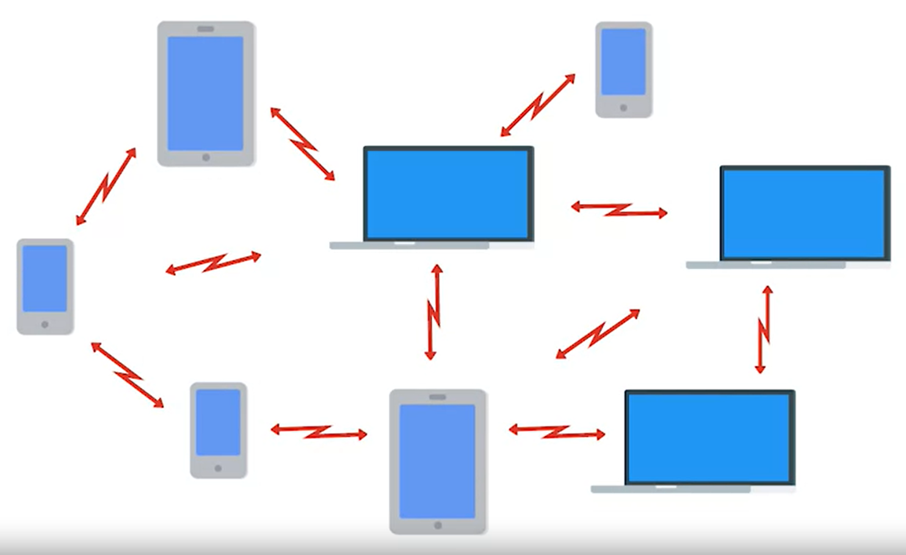

3 main ways for wireless network to be configured:
1. Ad-hoc networks
in an ad-hoc network, there isn't really any supporting network infrastructure. Every device involved with the network communicates with every other device within range and all nodes help pass along messages.

its not the most common configuration. its good for disaster situations, because theres no need for an infrastructure
2. wireless lan (WLAN)
the most common type, consists of one or more access poits that bridge between the wired and wireless networks

3.mesh networks
Consists mostly of wireless networks. This kind of network let's you deploy more access points to the mesh without having to run a cable to each of them.